Introduction à la photographie
Partie 1
Reflex
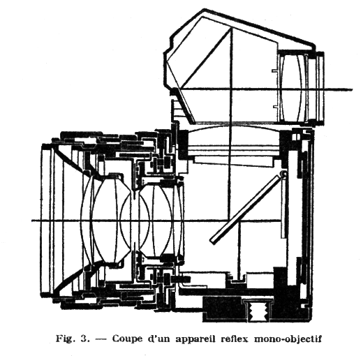Prisme
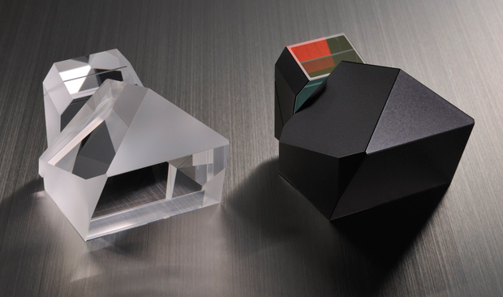Focale
| Ultra grand angle | < 15mm |
| Grand angle | < 35mm |
| Standard | ~ 50mm |
| Télé-objectif | > 70mm |
Vignettage, déformation, abérations chromatiques, angle de champ
Capteur
Profondeur de champ, angle de champFormat
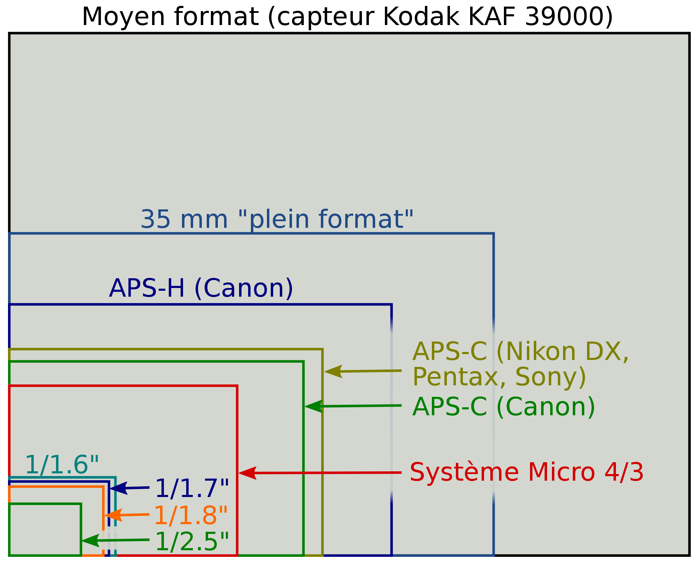Angle
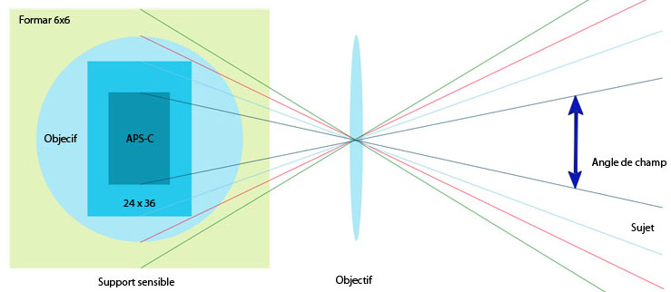Objectifs
ou "cailloux"- Monture
- Focale (fixe ou zoom)
- Ouverture (constante ou glissante)
- Lentilles
- Poids
- Distance de mise au moins
- Autofocus (ou pas)
- Manuel (ou pas)
- Stabilisation
- Piqué, contraste, bokeh, déformation, vignettage, abérations chromatiques...
- Gamme
Le triangle d'exposition

IL
ou EV ou Stop ou Cran+1 IL = 2x plus de lumière
Ouverture
| f/1 | f/1,4 | f/2 | f/2,8 | f/4 | f/5,6 | f/8 | f/11 | f/16 | f/22 | f/32 |
Profondeur de champ (bokeh), piqué, vignettage, déformation, abération chromatique
Diaphragme
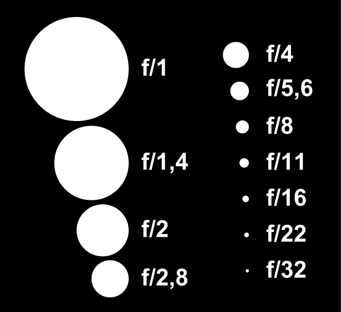Diaphragme
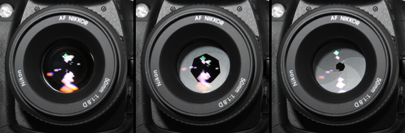Vitesse
| 1/4000 | 1/1000 | 1/100 | 1/50 | 1" | 5" | 30" | BULB |
Flou de bougé
ISO
| 100 ISO | 200 ISO | 400 ISO | ... | 3200 ISO | 6400 ISO |
Bruit
Profondeur de champ
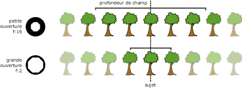- Ouverture
- Distance de mise au point
- Taille du capteur
f/1,4
f/11
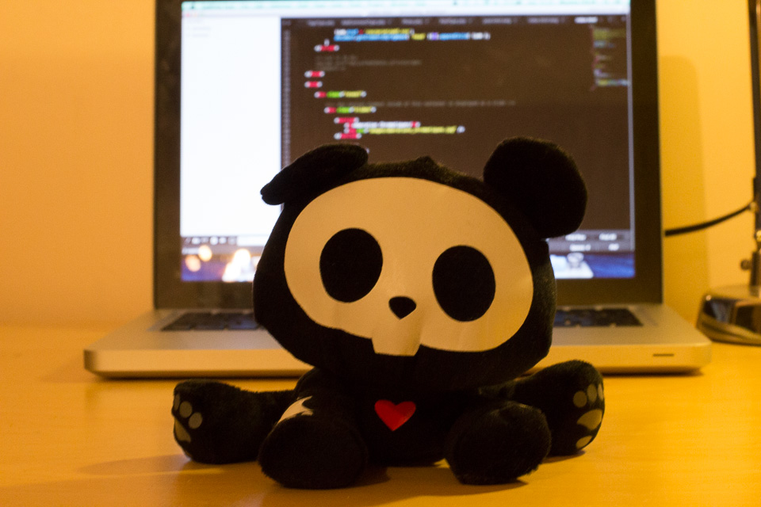Piqué
Déformation / Vignetage
- Ouverture
- Focale
- Qualité de l'optique
Avant
Après

Déformation
Aberation Chromatique
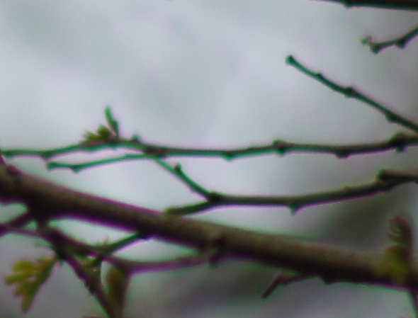Flou de bougé
Stabilisation
Collimateurs
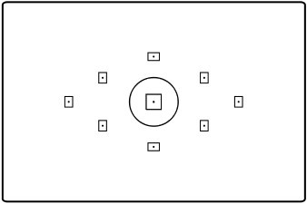Modes AF
- Simple : One Shot / AF-S
- Continu : AI Servo / AF-C
- Hybride : AI Focus / AF-A
- Manuel
Mesure de lumière
| Evaludative/Matricelle | [(.)] | Intégralité du viseur segmenté en zones de superficie égale |
| Selective | [( )] | Centre du viseur (9% de la surface) |
| Spot | [ . ] | Centre du viseru (3,8% de la surface) |
| Pondérée centrale | [ ] | Intégralité du viseur avec plus force importance au centre |
Hyperfocale
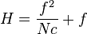 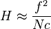- f = longueur de focale en mm
- N = ouverture
- c = valeur du cercle de confusion en mm
0,033mm (FF) / 0,019mm (APS-C)